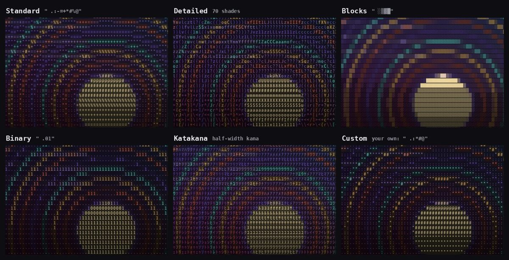

ASCII Music Visualizer
A Wallpaper Engine wallpaper that turns whatever you're listening to into live ASCII art. A WebGL shader redraws the album cover as characters in real time, with audio-reactive bars, a spinning cover that flips to show the tracklist, and song titles that work in Thai too. Anyone can subscribe on Steam Workshop, try the web version in the browser, or read the full source on GitHub.
- My role
- Design, development, publishing
- Built with
- JavaScript, WebGL, HTML/CSS, Node.js, Wallpaper Engine
—
Steam subscribers
—
Steam favorites


 SPU AI Prompt Mini Hackathon 2025
SPU AI Prompt Mini Hackathon 2025
 AI & IoT Competency Development Program
AI & IoT Competency Development Program